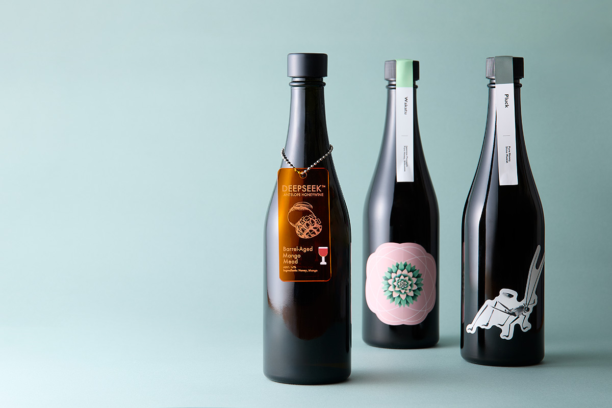
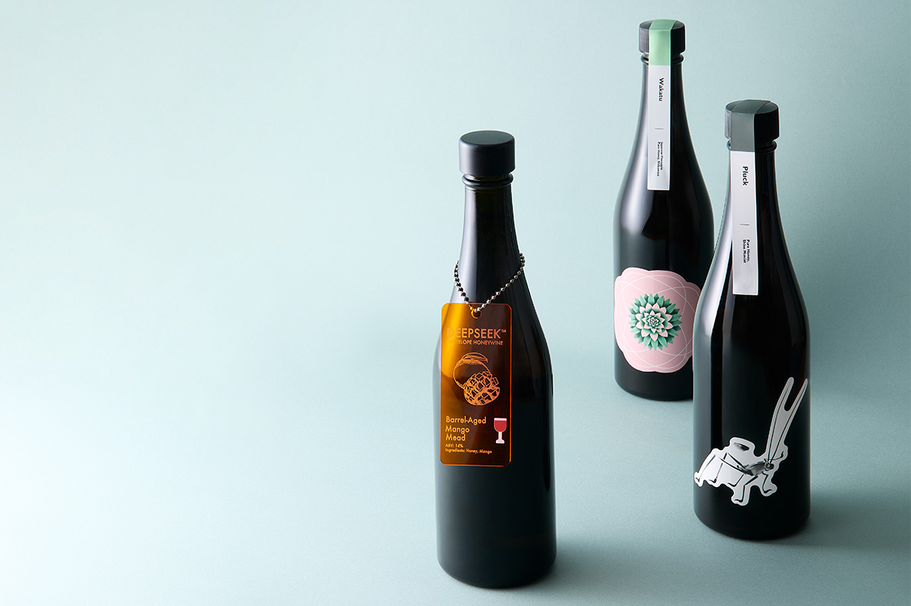
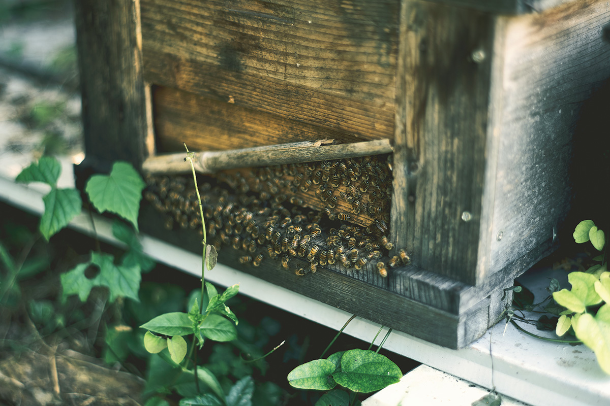
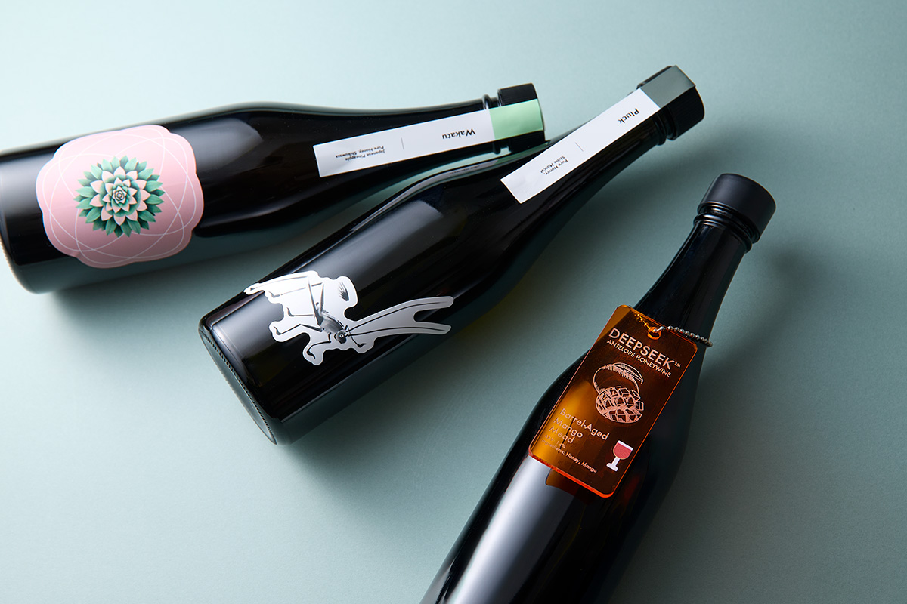
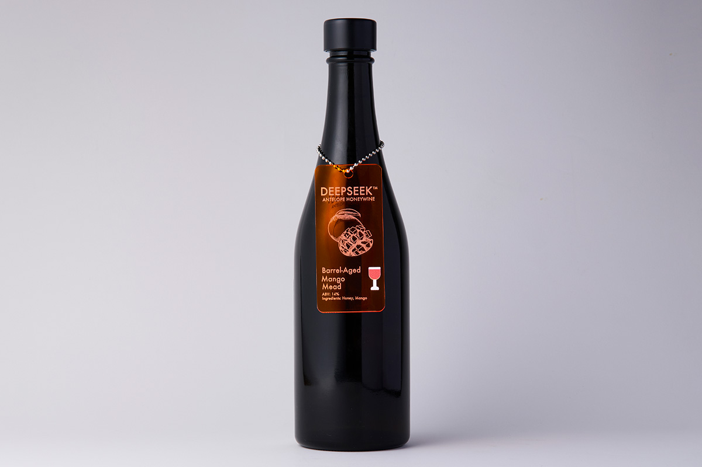
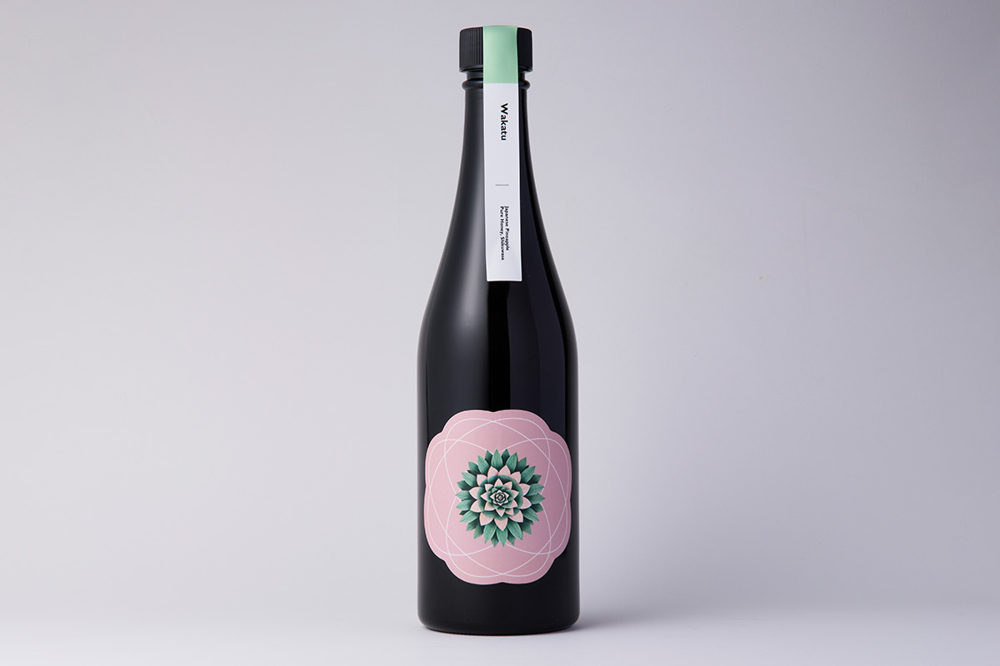
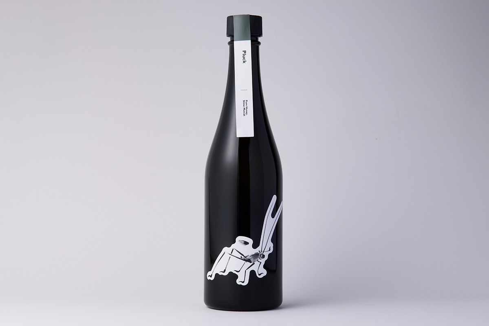

Префектура Сига · Ясу · напитки
ANTELOPE из Ясу: первая в Японии медоварня и мид с японских ферм

Мид, медовое вино, называют самым древним алкогольным напитком в мире, но единого рецепта у него нет. В городе Ясу у озера Бива его варит ANTELOPE, первая в Японии медоварня, которая занимается только мидом.
Напиток
Что такое мид
Мид делают из мёда: его разбавляют водой и сбраживают. Считается, что это старейший алкогольный напиток на земле, но ни откуда он взялся, ни как его готовили первым, никто не знает. При этом мид веками варят по всему миру, и каждый край делает его по-своему.

Основатель ANTELOPE Танидзава объясняет это так: условия для мёда создают сами пчёлы, поэтому мид, в отличие от вина или сидра, не привязан к месту происхождения. Именно поэтому культура мида тихо и упорно развивалась в самых разных странах.
«Отношение к еде и к своей земле очень разное в разных краях и у разных людей. Поэтому и слово „мид“ в каждом месте означает что-то совсем своё»
основатель ANTELOPE
Мид похож на суп: рецепт зависит от климата, от местной культуры и даже от того, как привыкли готовить в отдельной семье.
Медоварня
ANTELOPE: от американского мида к японскому
Танидзава работал пивоваром, а однажды попробовал мид в Америке и был поражён. В 2020 году он открыл в Ясу, городе в префектуре Сига недалеко от озера Бива, первую в Японии медоварню. Опыт пивоварения стал для него основой, и с тех пор он продолжает искать и пробовать.
Теоретической базы для мида почти нет. По словам Танидзавы, это одновременно радость свободно плыть по открытому морю и чувство, будто тебя выбросили за борт. Ориентир он поставил высокий: чтобы японский мид победил на мировом конкурсе. Главный стиль медоварни это «меломель», мид, в который из дополнительного сырья добавляют только фрукты.
«Мы хотим через мид показать всему миру, как хорошо в Японии умеют делать вещи. В университете я изучал философию сельского хозяйства и ещё студентом понял, как ценен труд фермеров и еда. С тех пор хочу этому помогать»
основатель ANTELOPE
Перемены
Переход на японский мёд
Чтобы лучше понимать своё сырьё, в ANTELOPE сами держат пчёл. До 2027 года медоварня собиралась полностью перейти на японский мёд. Но пришло известие, что ввоз мёда из Мьянмы, главного сырья до сих пор, прекращается, и переход пришлось сильно ускорить.

Танидзава считает, что время для этого как раз подходящее. В 2024 году исследователи Киотского университета Сангё выяснили, что в японском мёде живут бактерии брожения, близкие к тем, что работают в мисо и соевом соусе.
«Выходит, само пчеловодство несёт в себе японскую культуру брожения. Поэтому я давно хотел попробовать варить мид на японском мёде»
основатель ANTELOPE

С 2026 года медоварня начинает новый этап: этикетки переделывают вместе с местными дизайнерами. Себестоимость сильно вырастет, и без повышения цен не обойтись, поэтому для ANTELOPE это момент полного обновления бренда. Мид даёт много свободы, и тем важнее для Танидзавы одно: полная ответственность за вкус. Вместе с фермерами и пчеловодами ANTELOPE открывает вторую главу своей истории.
К цели, о которой говорил Танидзава, медоварня пришла уже в 2026 году. Её мид Aurea13 получил главный приз профессиональной категории на польском конкурсе Mead Madness Cup Pro 2026, одном из крупнейших в мире: японская медоварня выиграла его впервые. Aurea13 сварен на японском мёде из префектуры Сидзуока. Это сладкий мид крепостью 6 градусов с лёгкими пузырьками и ароматом мускатного винограда и мяты.
Бутылки
Три вида мида
Ниже три вида, которые ANTELOPE выпускала в начале 2026 года. Они сварены на мьянманском мёде, поэтому могут уже закончиться.

DEEPSEEK -Mango- чуть сладкий, с южным фруктовым ароматом, его можно пить и подогретым. Он душистый, как хороший чёрный чай, и хорошо идёт с пряными блюдами азиатских кухонь.

Сикуваса это маленький кислый окинавский цитрус. У Wakatu сладость, похожая на карамель, сплетается с кислинкой, и такой глубокий вкус отлично подходит к солёным закускам. Его стоит хорошо охладить, чтобы почувствовать лёгкие пузырьки.

Для Pluck берут рано собранный виноград «Шайн Мускат» с фермы NICE GRAPES в префектуре Яманаси. Из него вытянули свежую кислинку, и лёгкий мид хорошо идёт с рыбой.
ANTELOPE
- Адрес
- префектура Сига, Ясу, Нагахара, 551
- Цены / Вход
- DEEPSEEK -Mango- 3900 иен, Wakatu 2460 иен, Pluck 2910 иен (за 500 мл)
Фото: Сихо Акияма.